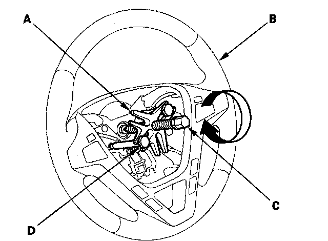

Steering Wheel Removal
Steering Wheel RemovalSRS components are located in this area. Review the SRS component locations and the precautions and procedures before doing repairs or service.
1. Make sure you have the anti-theft code for the audio system and the navigation system (if equipped).
2. Make sure the ignition switch is OFF, then disconnect the negative cable from the battery.
3. Align the front wheels straight ahead, then remove the driver's airbag from the steering wheel.
4. Disconnect the cable reel subharness connector (A).
5. Loosen the steering wheel bolt (B).
6. Install a commercially available steering wheel puller (A) on the steering wheel (B). Free the steering wheel from the steering column shaft by turning the pressure bolt (C) of the puller.
Note these items when removing the steering wheel:
^ Do not tap on the steering wheel or the steering column shaft when removing the steering wheel.
^ If you thread the puller bolts (D) into the wheel hub more than five threads, the bolts will hit the cable reel and damage it. To prevent this, install a pair of jam nuts five threads up on each puller bolt.

7. Remove the steering wheel puller, then remove the steering wheel bolt and steering wheel from the steering column.